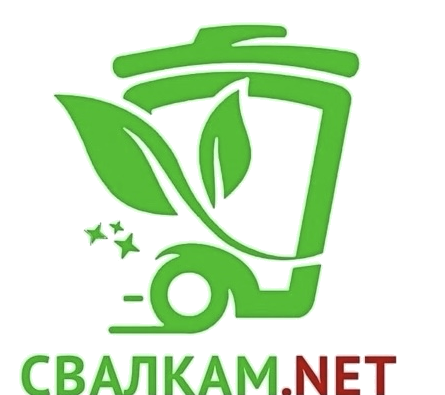
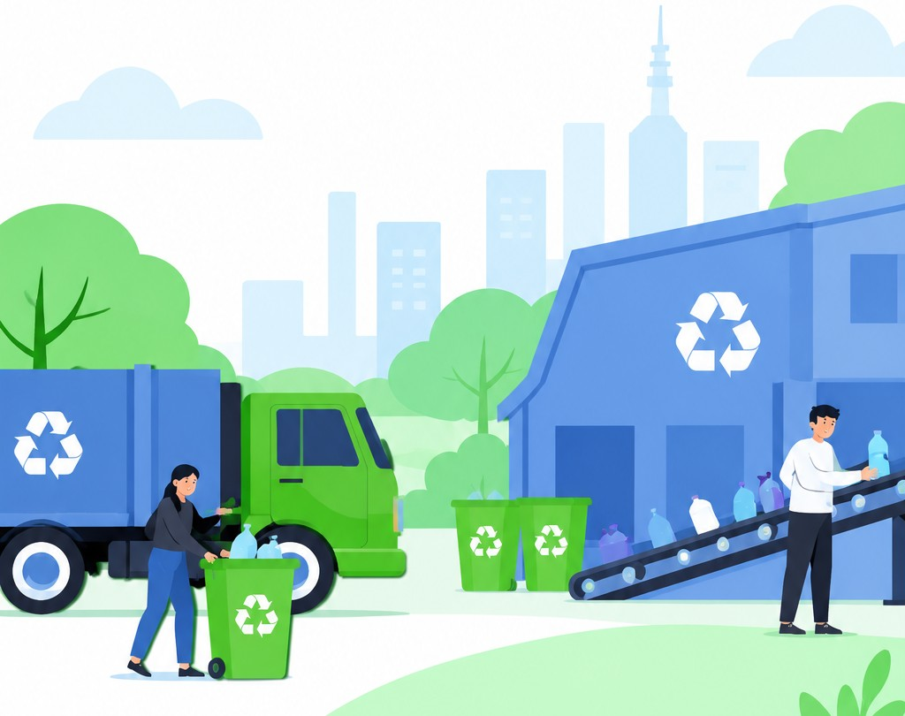

Обнаружили свалку
Увидели мусор в лесу, у дороги или во дворе.

СВАЛКАМ.NET ☎+7 (495) 123-45-67 Сообщить о свалкеОбнаружили несанкционированную свалку?
Расскажите нам — поможем передать информацию специалистам.
Это займёт всего несколько минут

Просто и понятно
Ваше сообщение помогает обратить внимание на проблему и начать её решение.
Увидели мусор в лесу, у дороги или во дворе.
Нажмите кнопку и заполните Яндекс Форму.
Укажите место, телефон и прикрепите фотографии.
Сотрудник проверит данные и передаст их в профильный центр.
После подтверждения результата добавим кейс в галерею.
Отправка обращения на сайте не означает автоматическую передачу в государственный орган или гарантированную ликвидацию свалки.
Не оставайтесь в стороне
Укажите местоположение и приложите фото. Чем точнее информация, тем проще проверить сообщение.
Результат совместной работы
Примеры мест, где проблема со свалкой была решена.
Здесь будет дата и краткое описание результата
Здесь будет дата и краткое описание результата
Публикуйте только проверенные кейсы и реальные фотографии «до» и «после» с разрешением на размещение.
Остаёмся на связи
Следите за нашими новостями
В социальных сетях делимся новостями проекта, результатами работы и полезной информацией.